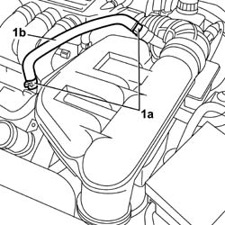

1080D16 Oil vapour PIPE from left head to intake chamber hose
- Path
- Procedures > 10 ENGINE > 1080 EMISSION CONTROL SYSTEM > 1080D CRANKCASE VAPOUR/GAS RECIRCULATION SYSTEM > 1080D16 Oil vapour PIPE from left head to intake chamber hose
- Kind
- repair procedure (removal / refitting; the operation number is the code)
- Applies to
- engines: 3.0 V6, 3.2 V6; all production periods
- Interactive page
- https://sloeber94.github.io/elrnDB-lThss/en/#/187488
Applies to: engines: 3.0 V6, 3.2 V6; all production periods
 Removing
Removing
 Refitting
Refitting- Open the bonnet
1. Open the retaining bands (1a) and remove the oil vapour pipe (1b).

Applies to: engines: 3.0 V6, 3.2 V6; all production periods
- Position the pipe and close the retaining bands.
Applies to: engines: 3.0 V6, 3.2 V6; all production periods
Refitting
Removing- Position the pipe and close the retaining bands.
- Close the bonnet